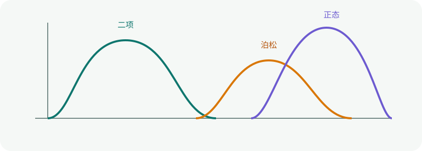

概率分布是随机变量的“行为说明书”：它告诉我们哪些结果更常见、波动有多大，以及极端结果有多罕见。不同的数据生成机制，对应不同的分布模型。
概率分布就是随机性的"指纹"——它告诉我们在不同取值上概率是如何分布的。学会识别常见的概率分布，就像学会识别常见动物的脚印——看到脚印你就能推断出是什么动物走过。同样，看到数据的分布形态，你就能判断用什么样的统计模型来拟合。

7.1 二项分布：n次独立试验中成功k次
二项分布（Binomial Distribution）描述的是：在n次独立重复的伯努利试验中，成功恰好发生k次的概率。
其概率质量函数为：P(X = k) = C(n,k) × pᵏ × (1-p)ⁿ⁻ᵏ
其中C(n,k)是组合数，p是单次试验成功的概率。
二项分布的条件：
- 每次试验只有两种结果（成功/失败）
- 试验次数n固定
- 每次试验成功的概率p相同
- 各次试验相互独立
二项分布的均值 = np，方差 = np(1-p)
现实例子：
- 抛10次硬币，正面朝上的次数（n=10, p=0.5）
- 发送100封营销邮件，其中打开的邮件数（n=100, p=打开率）
- 质检中抽查50个产品，次品的数量（n=50, p=次品率）
7.2 泊松分布：稀有事件的计数
泊松分布（Poisson Distribution）描述的是：在固定时间/空间范围内，稀有事件发生的次数。
其概率质量函数为：P(X = k) = λᵏ × e⁻λ / k!
其中λ（lambda）是单位时间内事件发生的平均次数。
泊松分布最有趣的性质是：均值 = 方差 = λ。这个"等分散"特性是判断数据是否符合泊松分布的一个简单标准——如果样本均值和方差大致相等，那就可能是泊松分布。
现实例子：
- 一个网站每分钟的访问量
- 某路段每月发生交通事故的数量
- 一本书中印刷错误的个数
💡 二项和泊松的关系：当n很大、p很小（经验规则：n≥20, p≤0.05）时，二项分布可以用泊松分布近似，λ=np。这就是为什么"罕见事件"的计数通常符合泊松分布——比如你网站上的用户行为数据中，某个非常冷门按钮的点击次数。
7.3 正态分布：大自然的钟形曲线
正态分布（Normal Distribution）是所有概率分布中最重要、应用最广泛的——没有之一。
其概率密度函数为：f(x) = (1/σ√(2π)) × e^{-(x-μ)²/(2σ²)}
正态分布由两个参数决定：
- μ（均值）：分布的中心位置
- σ（标准差）：分布的宽度
对于正态分布，有一个你应该记住的"68-95-99.7法则"：
- 约68%的数据落在 μ ± 1σ 内
- 约95%的数据落在 μ ± 2σ 内
- 约99.7%的数据落在 μ ± 3σ 内
为什么正态分布如此重要？因为中心极限定理（Central Limit Theorem, CLT）说：无论原始数据的分布是什么，当样本量足够大时，样本均值的分布近似正态分布。这意味着我们可以用正态分布来对均值做推断——即使我们完全不知道原始数据的分布。
import numpy as np
import matplotlib.pyplot as plt
from scipy import stats
# 1. 可视化四种概率分布
fig, axes = plt.subplots(2, 3, figsize=(15, 8))
# 二项分布：n=20, p=0.3
n, p = 20, 0.3
x_binom = np.arange(0, n+1)
binom_pmf = stats.binom.pmf(x_binom, n, p)
axes[0,0].bar(x_binom, binom_pmf, width=0.8, alpha=0.7, color='#7c3aed')
axes[0,0].set_title(f'二项分布 (n={n}, p={p})\n均值={n*p:.1f}, 方差={n*p*(1-p):.1f}')
# 泊松分布：lambda=3
lam = 3
x_poisson = np.arange(0, 12)
poisson_pmf = stats.poisson.pmf(x_poisson, lam)
axes[0,1].bar(x_poisson, poisson_pmf, width=0.8, alpha=0.7, color='#0ea5e9')
axes[0,1].set_title(f'泊松分布 (λ={lam})\n均值={lam}, 方差={lam}')
# 正态分布
x_norm = np.linspace(-4, 4, 200)
norm_pdf = stats.norm.pdf(x_norm, 0, 1)
axes[0,2].plot(x_norm, norm_pdf, 'b-', lw=2, color='#8b5cf6')
axes[0,2].fill_between(x_norm, norm_pdf, alpha=0.3, color='#8b5cf6')
axes[0,2].set_title('标准正态分布 (μ=0, σ=1)')
# 指数分布
x_exp = np.linspace(0, 5, 200)
exp_pdf = stats.expon.pdf(x_exp, scale=1)
axes[1,0].plot(x_exp, exp_pdf, 'r-', lw=2)
axes[1,0].fill_between(x_exp, exp_pdf, alpha=0.3, color='#ef4444')
axes[1,0].set_title('指数分布 (λ=1)')
# 均匀分布
x_unif = np.linspace(-1, 2, 200)
unif_pdf = stats.uniform.pdf(x_unif, 0, 1)
axes[1,1].plot(x_unif, unif_pdf, 'g-', lw=2)
axes[1,1].fill_between(x_unif, unif_pdf, alpha=0.3, color='#22c55e')
axes[1,1].set_title('均匀分布 U(0,1)')
# 中心极限定理演示
# 从均匀分布中重复抽样，计算均值
np.random.seed(42)
sample_means = []
for _ in range(10000):
sample = np.random.uniform(0, 1, 30)
sample_means.append(sample.mean())
axes[1,2].hist(sample_means, bins=50, density=True, alpha=0.7, color='#f59e0b')
axes[1,2].set_title('CLT演示：均匀分布样本均值的分布\n(n=30, 10000次模拟)')
plt.tight_layout()
plt.show()7.4 指数分布与均匀分布
指数分布（Exponential Distribution）描述的是"独立事件之间的等待时间"。
它的概率密度函数：f(x) = λe⁻λx, x ≥ 0
指数分布的均值 = 1/λ，方差 = 1/λ²
指数分布有一个关键性质——无记忆性（Memoryless Property）：P(X > s+t | X > s) = P(X > t)。意思是：已经等待了s时间之后，再等t时间的概率和刚开始等是一样的。它"不记得"已经等了多久。
现实例子：
- 地震发生之间的时间间隔
- 设备故障的间隔时间
- 公交车站的等待时间（在随机到站假设下）
均匀分布（Uniform Distribution）是最简单的分布：在给定区间内，所有值的概率相等。均匀分布常用于随机数生成、蒙特卡洛模拟，以及作为"无信息先验"在贝叶斯分析中使用。
| 分布 | 类型 | 参数 | 均值 | 方差 | 典型用途 |
|---|---|---|---|---|---|
| 二项 | 离散 | n, p | np | np(1-p) | 成功/失败计数 |
| 泊松 | 离散 | λ | λ | λ | 稀有事件计数 |
| 正态 | 连续 | μ, σ | μ | σ² | 测量误差、自然现象 |
| 指数 | 连续 | λ | 1/λ | 1/λ² | 等待时间 |
| 均匀 | 连续 | a, b | (a+b)/2 | (b-a)²/12 | 随机数生成 |
7.5 中心极限定理的直观理解
中心极限定理（Central Limit Theorem, CLT）是统计学中最"神奇"的定理。它不是关于数据的分布，而是关于样本均值的分布。
CLT说：无论原始数据的分布是什么样的（可以是均匀分布、指数分布、甚至双峰分布），只要你抽取足够大的样本，计算样本均值，然后重复这个过程很多次——这些样本均值的分布就会近似于正态分布。
样本量多大才算"足够大"？
- 如果原始数据分布大致对称：n ≥ 30 通常就够了
- 如果原始数据严重偏态：可能需要 n ≥ 100 甚至更大
- 如果原始数据有极端异常值：标准CLT可能不适用
📖 踩坑故事：把非正态数据当正态分析
我曾为一个金融科技公司做风控模型咨询。他们的数据科学家在构建信用评分模型时，直接对原始特征做了标准化（z-score），然后基于"均值±3σ"来标记异常交易。
问题是，交易金额的分布是极度右偏的——大部分交易在10-500元之间，但偶尔有几百万的大额交易。由于这些大额交易的存在，标准差被拉到了非常大的值，导致"均值±3σ"的阈值高得离谱——几乎不可能标记出任何异常交易。
我做的第一件事是画出交易金额的直方图。结果一看就知道，这个分布更像是"对数正态"——取对数之后就变成近似正态了。经过对数变换后，z-score方法才有效。
这个故事的核心教训是：很多统计方法（t检验、ANOVA、线性回归）都对数据分布有假设。在应用这些方法前，你必须确认数据的分布是否符合假设。不符合？那就做变换（取log、开根号、Box-Cox变换），或者改用不需要分布假设的非参数方法（比如后面会讲到的Mann-Whitney U检验）。
⚠️ 对CLT的常见误解：很多学生以为CLT说"原始数据会变成正态分布"，这是完全错误的。CLT说的是"样本均值的分布"趋于正态，不是原始数据本身。即使样本均值是正态的，原始数据仍然可以是严重偏态的。如果你要对原始数据做参数检验（需要正态假设），你必须确保的是数据本身（或残差）接近正态——或者通过变换实现这一点。
概率分布是统计推断的"零件箱"。认识了二项分布、泊松分布、正态分布、指数分布和均匀分布，你就掌握了绝大多数实用统计场景的基础工具。下一章，我们将把这些知识串联起来，进入推断统计的核心——抽样与抽样分布，学习如何从小样本中可靠地推断总体特征。
CORE RELATION
本章核心关系
适用于 n 次独立伯努利试验且每次成功概率 p 相同的情形。
从数据生成机制选择分布
选择一种分布，检查它描述的随机过程是否与你的数据收集方式相符。
教学模拟：用于理解概念与方向，不替代真实数据分析、正式功效计算或研究设计审查。
TAKEAWAYS
本章要记住的三件事
- 二项分布描述固定次数、独立且成功概率相同的伯努利试验总成功数。
- 泊松分布常用于固定区间内事件计数，需审视独立性与恒定发生率等假设。
- 中心极限定理讨论标准化样本均值的近似分布，不意味着原始数据必定正态。
FURTHER READING
延伸阅读与核对来源
参考来源用于核对概念与方法。涉及具体数据、历史细节或行业案例时，应回到原始研究或官方文档逐项核验。